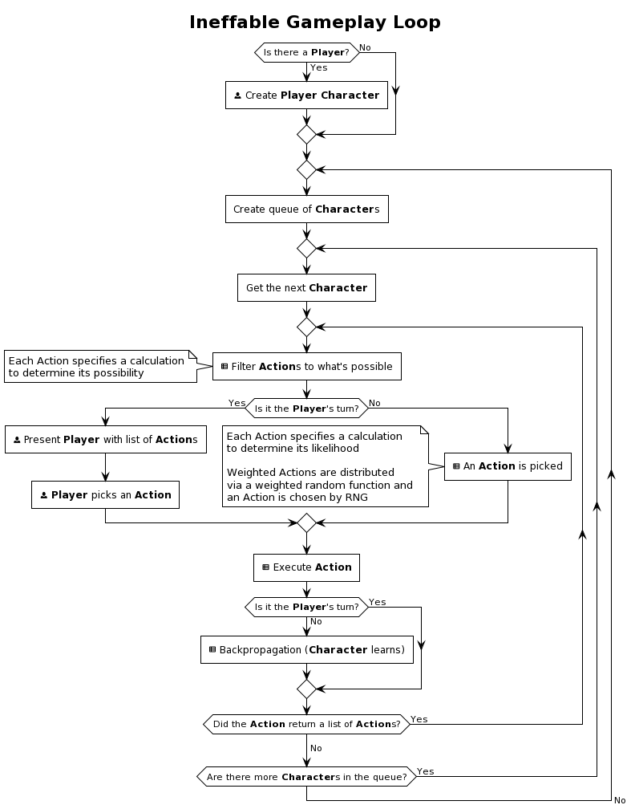

<meta name="viewport" content="width=device-width, initial-scale=1">
<title>Ineffable</title>
<main>
  <h1>Ineffable <small><mark>This is a living document</mark></small></h1>
  <figure>
    
    <figcaption>Diagram of Ineffable's Gameplay Loop</figcaption>
  </figure> 
  <h2>What is it?</h2>
  <p>Ineffable is a simulation engine for one-of-a-kind, interactive narrative experiences in living worlds that grow along with the reader/player</p>
  <p>It exists in pieces which you may never see in their entirety. Something tangible may come of it someday, who's to say</p>
  <h2>Inspiration</h2>
  <p>I've wanted something like Ineffable since before I hit double digits, so I've had the benefit of being inspired by the <a href="https://en.wikipedia.org/wiki/Dynabook">Dynabook</a>, <a href="https://en.wikipedia.org/wiki/The_Diamond_Age">A Young Lady's Illustrated Primer</a>, <a href="https://en.wikipedia.org/wiki/Dungeons_%26_Dragons">Dungeons & Dragons</a>, <a href="https://en.wikipedia.org/wiki/Harvest_Moon_(video_game)">Harvest Moon</a>, and countless other efforts</p>
  <p>It's worth noting that I've also contributed to projects with similar construction, including <a href="https://github.com/incrediblesound/story-graph">story-graph</a></p>
</main>
<footer><hr><a href="/">Home</a><aside>Last modified Friday, June 24, 2022</aside></footer>
